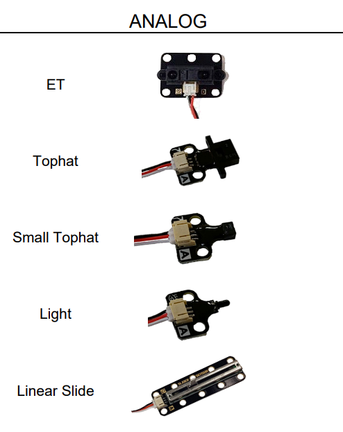
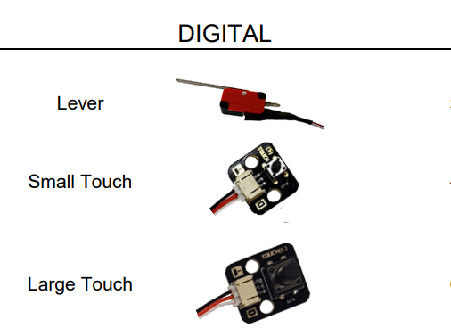

Hewwo and welcome to the sensors tutorial! First, we'll start off with a detail on the types of sensors that there are.
Sensor Types
Analog Sensors

As the above image details, there are 5 primary types of analog sensors. These get plugged into the wombat's (or wallaby's) analog ports.
- ET sensors - These are "distance" sensors; they return values based on the distance from the sensor's lens to the nearest object. The higher the value, the closer it is to an object. Note that these only detect objects in the direction of the lens.
- Tophat sensors and Small Tophat sensors - These sensors should be positioned facing the board. Their use is to detect the brightness of the floor, which means that most teams use them to detect whether there is tape on the board or not. Essentially, these are the sensors that you'll use if you want to line follow tape on the board.
- Light sensors - These are used for detecting the starting light.
- See also
- wait_for_light
- Linear Slide sensors - These are slideable sensors. They read higher values the more that they are pushed in. Common use for these would be to get within a certain distance of a wall.
Digital Sensors

As the above image details, there are 3 primary types of digital sensors. These get plugged into the wombat's (or wallaby's) digital ports.
- Lever - Also called a click sensor. Outputs 0 when not clicked and 1 when clicked.
- Small Touch and Large Touch - These are buttons. They output 0 when not pressed and 1 when pressed.